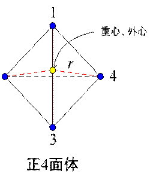
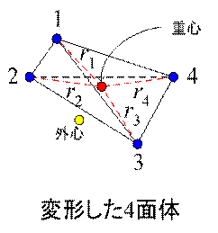

・要素の変形
ラグラジアン座標の場合は、要素が変形する。
そのまま変形が進むと計算が破綻したりするので、メッシュの再作成が必要となる。
その目安を要素の変形度として次の様に計算してみる。
 
上図の様に正4面体の場合は、重心と外心の座標が等しいが、変形するとそれらの位置はずれる。
この重心と外心のずれから要素の変形度を計算する。
つまり本来、外心と等しい要素の重心から各節点までの距離を計算する。
外心を使用するのは、外心が外接球の中心で各節点までの距離が等しいからである。
まず、要素の重心の位置は次式となる。
正4面体の重心から各節点までの距離をrとする。rは未知数である。
また、変形した4面体の重心から各節点までの距離を次式とする。
ここで、各節点から重心までの距離のずれをdrとすると次式となる。
ここで、
このずれは、次の場合に最小となる。
従って、規格化したこのずれを変形度とすると次式となる。
従って、
この変形度は、要素が正4面体の場合0になる。
経験的に0.5〜0.7がメッシュ再作成の目安になった。